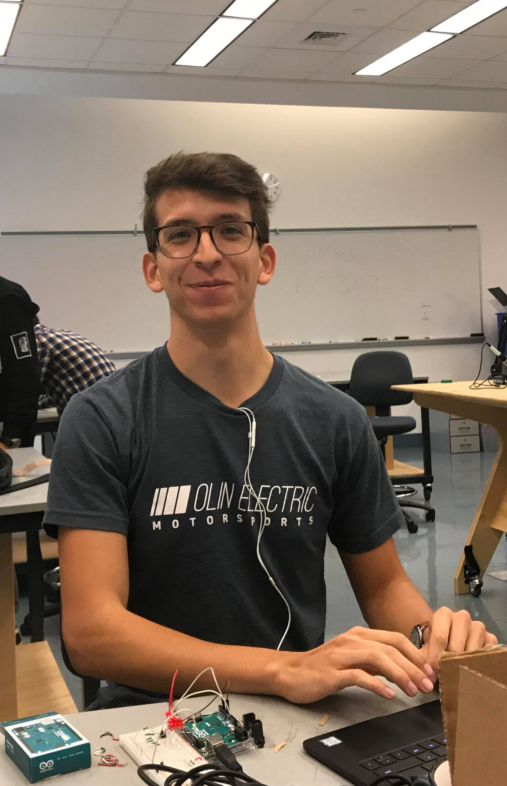
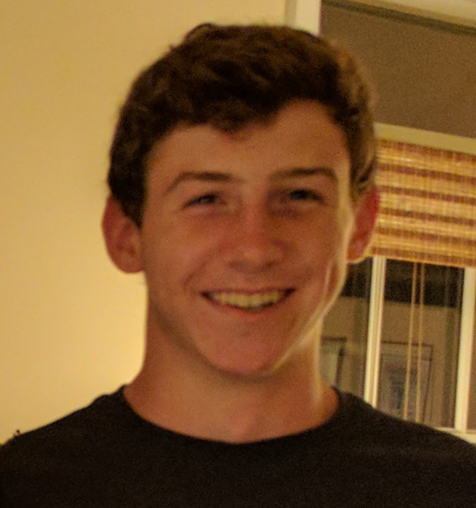
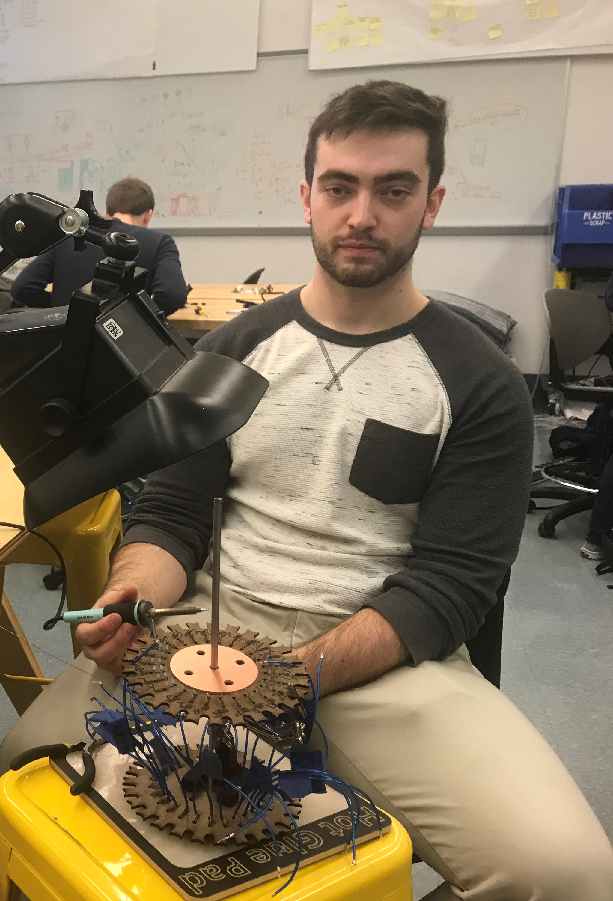
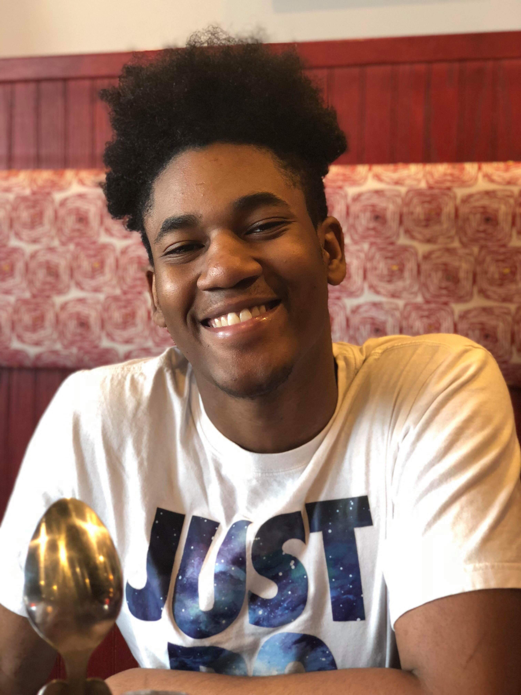

Our team consists of Dan, Bryce, Libby, Corey, Shy, five brilliant engineers looking to share a love for encryption with the world.

Corey
Corey co-leads our electrical subteam. His love and constant desire for snacks has ensured that the team has stayed nourished throughout the project. Corey contributes mainly to our electrical subteam, where he can often be overheard discussing relays and seen shocking himself with electroluminescent wire.
Github

Daniel
Daniel is the epitome of a team player. He can often be found trying to find new programming tasks to tackle or getting outside. Daniel is our mechanical lead, contributing to both our mechanical and software subteams, and his goals range from gaining experience in mechanical design to learning about electrical integration.
Github

Libby
Libby is our resident mechanical engineer. The idea for this project spawned from her work at a museum over the summer, and she has helped drive the team throughout the project. Libby contributes heavily to our overall organization and management while also acting as a sixth man to help out wherever else she is needed.
Github

Bryce
Bryce is the other co-lead for our electrical subteam. The team lovingly refers to him as "B", to which he responds with post-it notes that suggest our goals should include "getting Corey off the team." Bryce contributes heavily to our electrical subteam and his goals range from doing electrical stuff to programming.
Github

Shyheim
Shyheim is a jack of all trades. He has contributed to multiple subteams, with his main focus being on developing our mechanical housing. His positive attitude ensures the team stays in a good mindset and on-task. Shyheim contributes mainly to our mechanical subteam and his goals range from CAD to programming.
Github